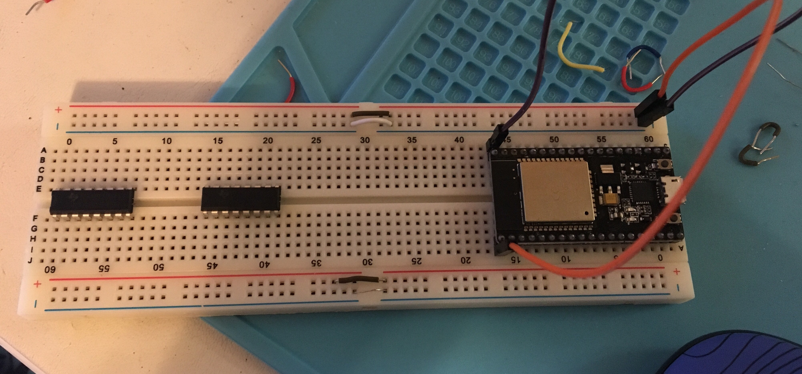
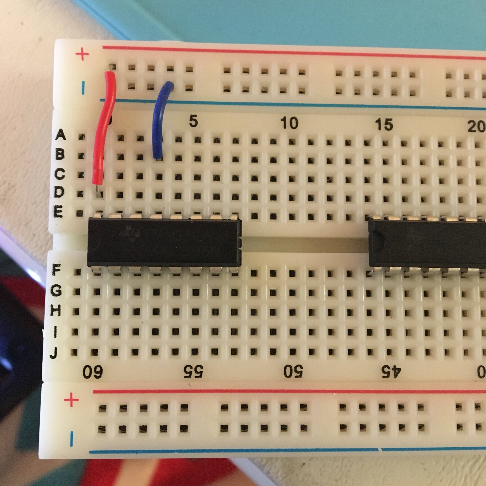
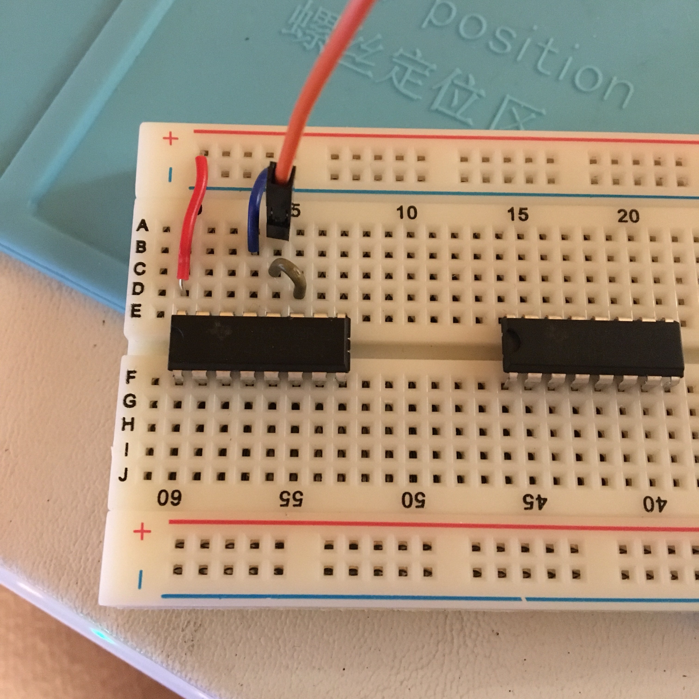
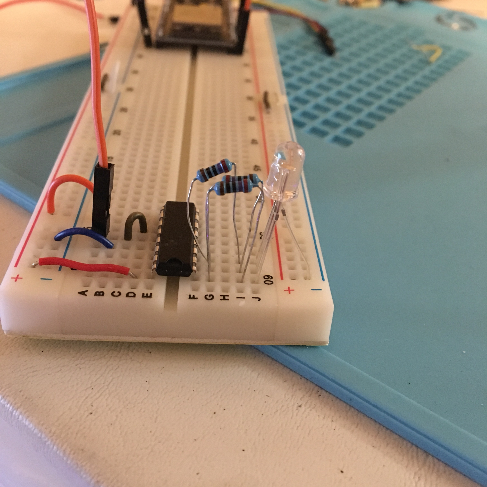
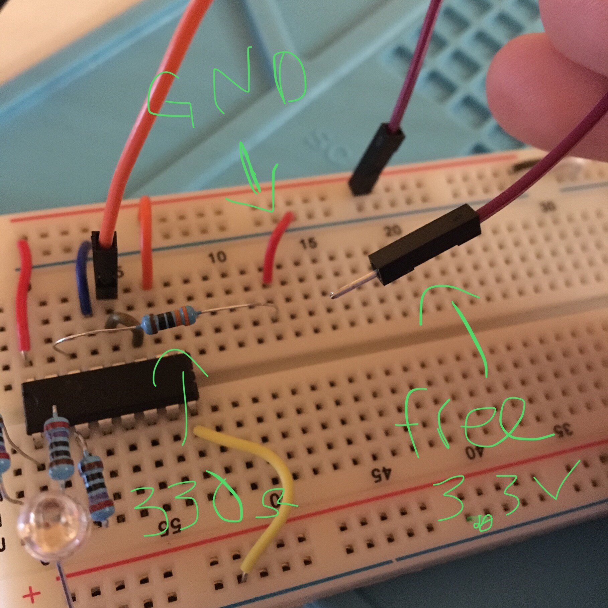

[12.24.17]
74HC595
Texas Instruments Shift Registers with ESP32
These shift registers are adorable, cool, and perfect for my next project.
Gector gifted me two of them to play with, so I set up a simple shift register experiment - LEDs!
With the datasheet, a helpful article from Arduino, and my ESP32, it took around 30 minutes to try it out.
Starting with an empty breadboard, the shift registers, and the ESP32:

We're gonna connect the ESP32's 3.3V and GND pins to the appropriate sides of the breadboard. On the ESP32, those'll be the top right and left pins by the processor. I used this diagram to help me determine for sure.
{kind=link}
Then we'll start getting the shift register hooked up to the important things.
First things first is power.

With a jumper wire, connect the 3.3V power to pin 16 - Vcc. With another jumper wire, connect Pin 8 - GND to ground.
We can skip pin 15 for now, Q0, since that's an output pin. Pin 14 is the serial data input, where we'll connect the switch, but I'm going to do that later on.
Pin 13 is Output Enable. If I remember correctly from my PSU
microprocessors textbook, the line overtop the letters on the
diagram means the input is inverted. On the Arduino pin chart I
linked earlier, OE pin is constantly active low when the shift
register is powered on. This means if we connect pin 13 to ground,
the signal will invert, and the pin will be active high and enable
the outputs to go to the LEDs that we'll hookup later. Therefore,
lets connect pin 13 to its respective GND.

Pin 12 ST_CP and Pin 11 SH_CP are fun. Pin 12, ST_CP is the shift register clock pin. Pin 11 is the shift register latch pin. These pins allow the shift register to latch the input data into the system, and via clock signal, shift them down the output registers. Because the input for both clock and latch are coming from the same pin on the ESP32, I'm going to tie the two pins together.
Next, connect GPIO 24 (IO4) of the ESP32 above the tied pins.

MR stands for Master Reclear, and this pin is also set to active low, but when there's an input, it's inverted. We're going to hook this pin up to 3.3V, so the signal will continue to act as active low.
Boom! That's all you need to hook up to the shift register, aside from the switch and the LEDs.
For this example, I'm going to be using common cathode RGB LEDs, but that can be easily replaced with a few regular LEDs.
Tie the cathode to ground and place the anodes into the first three pins on the opposite side of the shift register.
Find out what resistors you need, if any, and place those between
the pins and the anodes.

Now we can set up the switch. Because I didn't have a legit button or switch on hand, I made one out of jumper wires.
Stick a 330Ohm resistor into Pin 14, the Serial Data pin, and pull
it out beyond the shift register. With a jumper wire, connect the
"empty" end of the resistor to Ground. Grab another jumper wire and
plug it into the 3.3V, but let it hang freely and don't connect it
to anything yet.

Finally, load this code from my GitHub (code cred: CaptainGector) onto your Arduino or ESP32, and plug it all in.
Nothing should happen yet. Take the free hanging jumper wire and
touch it to the front part of the resistor plugged into the pin. If
everything is correctly plugged in, the LEDs should light up in
order and turn off in order. Yay!!
Keep in mind, I'm only utilizing 3 out of the 8 available outputs on this thing. If you want to maximize your output to 16 or even 24 outputs, you can add one or two more shift registers very easily by setting up the power and LEDs the same way, and linking Pin 9 (Q7') of the first register to the Pin 3 (DS) of the second shift register, and so on.
With this technology I'm hoping to set up a binary wristwatch wearable. I've bought most of the parts already, next step is to learn all the code and use the ESP32 to grab accurate time from the internet, then get a mock setup working on my breadboards.
Stay tuned!
{thallia}